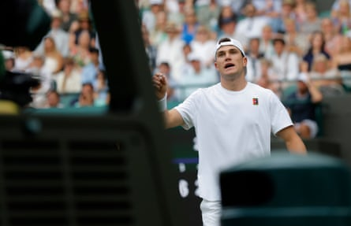
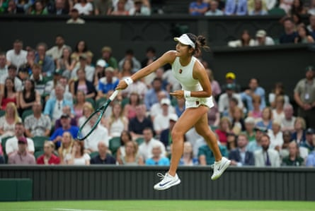

When the Wimbledon organisers announced last year that electronic line-calling would replace line judges for the first time at the Championships this year, plenty of criticism could have been anticipated. Some people would take issue with the more sterile landscape on court and the lack of human touch, while the cull of around 300 linesmen and women would also surely be a sore point. It is difficult, however, to imagine they were prepared for the firestorm that has followed its long-awaited implementation at this tournament.
Electronic line-calling, or ELC, which uses automated ball-tracking technology has, after all, long been used in professional tennis tournaments, starting with the Next Gen ATP Finals in 2018. It has been four years since the Australian Open became the first grand slam to utilise the technology and this year, for the first time, the men’s tour, the ATP, is using ELC at all of its events. Although all other men’s clay-court events use ELC, the French Open is now the only grand slam that still employs human line judges.
Instead of this year offering Wimbledon to step into the future, however, the All England Lawn Tennis Club (AELTC) has spent the first eight days of the tournament defending its implementation of the technology, which is enhanced by artificial intelligence.
For the first five days of the tournament the most significant blows were the parting shots from Jack Draper and Emma Raducanu, the men’s and women’s British No 1 players, who each criticised the ELC system following their defeats. Both players believed they had been subjected to incorrect calls. “It’s kind of disappointing, the tournament here, that the calls can be so wrong, but for the most part they’ve been OK. It’s just, like, I’ve had a few in my other matches, too, that have been very wrong,” Raducanu said.
Jack Draper complains to the umpire after an electronic line call during his loss to Marin Cilic.Photograph: Tom Jenkins/The Guardian
The AELTC maintained that the system was working optimally and that ELC remains considerably more accurate than the line judges it replaced. Wimbledon employs Hawk-Eye, one of numerous ELC providerswhich uses a system that incorporates 10 cameras placed around the court, and which track the bounce of the ball. Hawk-Eye states that its margin of error is 2.2mm. Wimbledon had previously used ELC only as a safety net, allowing players to challenge calls conducted by line judges.
“It’s funny, because when we did have linesmen, we were constantly asked why we didn’t have electronic line-calling because it’s more accurate,” Debbie Jevans, the chair of the AELTC, told the BBC.
Then came a disastrous series of events on Centre Court. As Anastasia Pavlyuchenkova held game point on her serve at 4-4 in the first set against Sonay Kartal on Sunday, a backhand from Kartal clearly flew long but it was not called out. After a lengthy delay, it emerged that some of the ELC cameras had not been functional on Pavlyuchenkova’s side of the court for some time during the game. The umpire Nico Helwerth opted to replay the point. Around 10 minutes later, after losing that service game, Pavyluchenkova faced a set point on Kartal’s serve.
Emma Raducanu has not been impressed by ELC at Wimbledon.Photograph: Dave Shopland/Shutterstock
In the end, the AELTC was fortunate with the outcome. Pavlyuchenkova, who told Helwerth the tournament had “stolen” the game from her, recovered to win both the set and the match, limiting the significance of the error. The AELTC announced in a statement on Sunday night that the ELC had been accidentally deactivated on Pavlyuchenkova’s side of the court by one of the operators running the system.
Bright on Monday morning, the Wimbledon chief executive, Sally Bolton, fielded a contentious scheduled meeting with the media, which was almost entirely centred around ELC. Bolton asserted repeatedly that the mistake was purely down to human error, that the protocols had been changed to prevent a similar issue and that ELC has otherwise been working accurately during the tournament. At the very least, the situation with Pavlyuchenkova also underlined the importance of having contingency plans for when technology fails, including the possibility of umpires using video replay.
Since the implementation of ELC, player reaction has largely been positive as it was rolled out on hard courts, with players recognising the greater accuracy provided by the system compared to human errors. However, after numerous dramatic moments during the clay-court season, as some players were frustrated with the differences between the ball marks and the ELC’s judgments, the first week of ELC at Wimbledon has been a difficult one. It is clear that faith in its implementation on the surface has diminished and both privately and publicly, players and coaches have expressed scepticism about its accuracy. As the tournament moves into the latter stages, it remains to be seen if that faith will be restored.